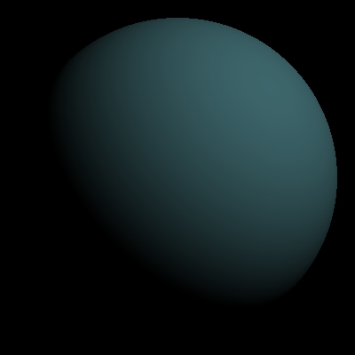
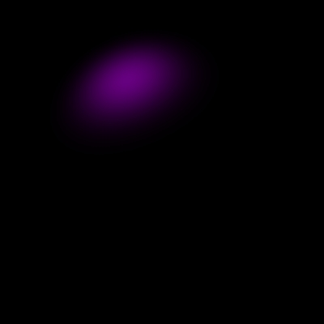
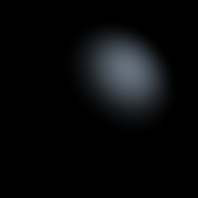
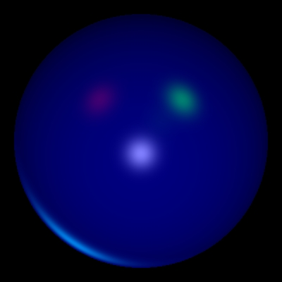
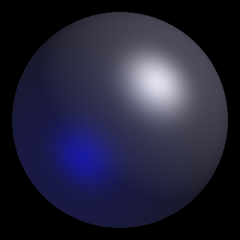
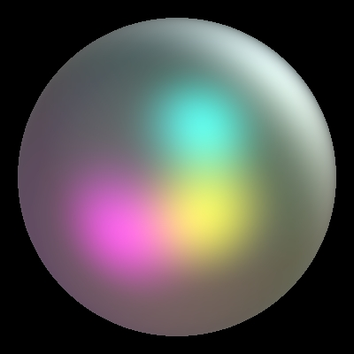

Assignment 1
This is my assignment 1, which follows the spec and is also able to write to jpgs (which is how these images were created). Assignment 1 is a shader which implements the Phong Illumination Model to shade spheres, with parameters determined by command-line arguments.
Diffuse light only, with a single light source.
-pl 200 200 200 0.8 0.8 0.7 -kd 0.3 0.5 0.6 -jpg diffonly.jpg

Specular light only, from a point source.
-pl -5 12 4 1.0 0.0 1.0 -ks 0.4 0.9 0.5 -sp 6 -jpg onespecpl.jpg
Specular light only, from a directional source.
-dl -15 -15 -15 1.0 0.5 1.0 -ks 0.4 0.9 0.5 -sp 3 -jpg dirspeconly.jpg

Specular and diffuse lighting.
-pl -5 12 4 0.8 0.5 0.6 -ks 0.4 0.9 0.5 -kd 0.1 0.4 0.8 -sp 6 -jpg specdiffuse.jpg

Many lights (same args as sample).
-dl 0 0.2 -1 1 1 1 -dl 1 -1 -1 0.5 0 0 -dl -1 -1 -1 0 1 0 -pl 10 10 30 0 0.1 0 -pl -4 -6 -10 0 1 1 -ka 0 0 0.1 -kd 0 0 0.3 -ks 0.5 0.5 0.5 -sp 36 -jpg manylights.jpg
Specular, diffuse, ambient light from 2 point lights.
-pl 5 5 5 1 1 1 -pl -4 -4 4 0.0 0.0 0.6 -ka 0.1 0.1 0.1 -kd 0.2 0.2 0.2 -ks 0.6 0.6 0.6 -sp 6 -jpg multlight.jpg

One of the many examples given for us to check against.
-pl -5 -5 5 1 0 1 -pl 10 10 -10 1 1 1 -pl 3 -4 8 1 1 0 -pl 1 2 3 0 1 1 -ka 0.1 0.1 0.1 -kd 0.1 0.1 0.1 -ks 0.5 0.5 0.5 -sp 4 -jpg outout.jpg
